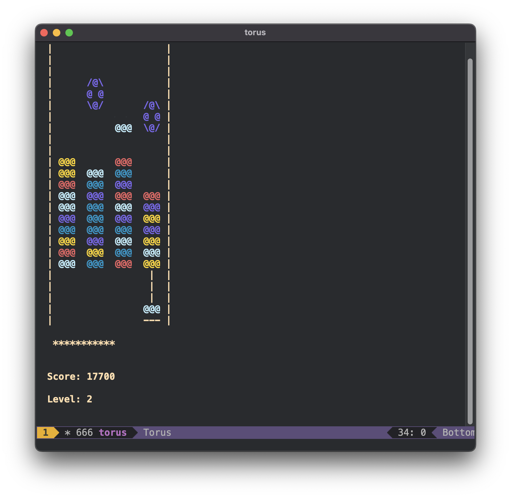

Newbiemacs Home
Table of Contents
1. Introduction
2. Main features of Newbiemacs
3. Links
1.
Introduction
Newbiemacs is a pre-configured
GNU Emacs
distribution inspired by
Spacemacs
.
Newbiemacs is desiged for mathematician who are new to Emacs.
2.
Main features of Newbiemacs
Organize your pdf and tex files.
Search pdf and tex files quickly.
Easy to use.
You can play the torus game!

3.
Links
Installation
Tutorial
Newbiemacs Git Repository
Author: Jang Soo Kim
Created: 2022-12-11 Sun 15:23
Validate